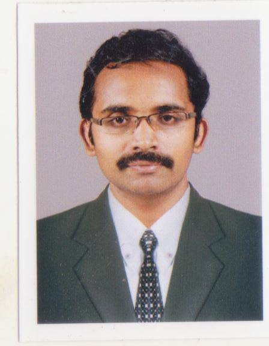

Antony.S.Ukken

Career Summary
-
Done Statutory Audit of Various branches of Canara Bank from 2019-20 to
2022-23.
-
Done Statutory Audit of Various branches of Federal Bank from 2019-20 to
2020-21.
-
Done Statutory Audit of Various branches of Catholic Syrian Bank from
2018-19 to 2020-21.
-
Done Statutory Audit of Various branches of Canara Bank from 2017-18 to
2021-22.
-
Done Concurrent Audit of South Indian Bank, Ayyanthole branch for the
financial year 2015-16
- Done Statutory Audit of Various Private Companies
Personal Qualities
- Strong analytical and logical skills
- Excellent knowledge of business laws
- Remarkable patience and skilful in handling the cases
- Excellent communication skills in written and verbal both
Key Responsibilities
- repare corporate and personal tax returns.
-
Manage federal and provincial, tax audits and prepare notices of
objection
-
Negotiate and secure many positive outcomes from many federal and
provincial tax authorities on behalf of clients.
- Calculate individual and corporate tax installments payments
-
Ensure timely completion of returns and any related elections or
designations
- Review issues involving the tax conventions and other treaties
Computer Knowledge
- Proficient in basic use of Computer
- Proficient in using of accounting software
- Internet Savvy
Employers
- Worked as Articled clerk in Raphy & Co., from 2006-2009
- Audit assistant with G V Sukumar from 2012-2013
- Audit assistant in P K Jayan & Co from 2013-2014
- Started practice from 2014
Academia
- B.Com from university of Calicut in 2005
- CA from ICAI in the year 2012
- Certification course on Indirect taxes from ICAI in 2013
- DISA from ICAI in 2014
-
Certification course on concurrent audit of banks from ICAI in 2018
Personal Details
- DOB -22/08/1984
- Languages known- English,Malayalam,Hindi
-
Address-Room No.25/1806/72,4th Floor, Lamex
Arcade,P.O.Road,Thrissur-680001